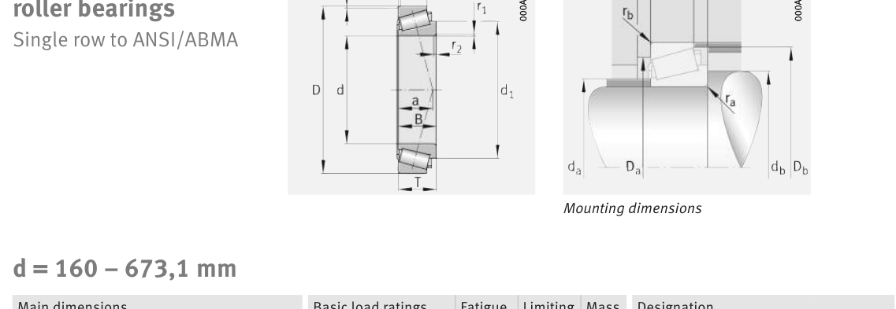

Original catalogue drawing - FAG Schaeffler HR 1, page 630

Scanned from the manufacturer catalogue page listing this part number. All part numbers printed on that table share the same drawing.
Scale cross-section
Blue = inner / outer ring, yellow = rolling element. Drawn to scale from this part's own
dimensions for selection reference only - not a manufacturing or assembly drawing.
Dimension table (mm / inch)
Symbol
Dimension
mm
inch
d
Bore diameter
184.15
7.25
D
Outside diameter
235.229
9.261
B
Inner-ring / bearing width
33
1.2992
T
Overall assembly width
34
1.3386
C
Cup / outer-ring width
28
1.1024
Notes
Weights are given in kg. Load ratings are shown in both the original catalogue units and the converted value (1 N = 0.2248 lbf). Data is provided for selection reference only - confirm against the latest official catalogue before ordering.
Main dimensions
Bore d (mm)
184.15
Outside dia. D (mm)
235.229
Width B (mm)
33
Overall width T (mm)
34
Cup width C (mm)
28
Inner-ring OD d1 (mm)
209.8
Load ratings & speeds
Basic dynamic load rating Cr (lbs)
52605
Basic static load rating Cor (lbs)
109032
Basic dynamic load rating Cr (N)
234000
Basic static load rating C0r (N)
485000
Basic dynamic axial rating Ca (N)
4
Fatigue limit load Cur (N)
33500
Factor e
0.33
Factor Y
0.99
Factor Y0
1.79
Limiting speed nG (rpm)
2,800
Effective load centre a (mm)
39
Weight
Weight (kg)
3.47
Mounting dimensions (fillets / shoulders)
Chamfer r2 min (mm)
2
Shaft shoulder da (mm)
191
Shaft shoulder db (mm)
195
Housing shoulder Da (mm)
224
Housing shoulder Db (mm)
229
Housing fillet ra max (mm)
2
Fillet rb max (mm)
2
Bearing life (ISO 281 basic rating life)
C / P
Equivalent load P (N)
L10 (106 rev)
L10h at 900 rpm
4
58,500
102
1,881
6
39,000
392
7,268
8
29,250
1,024
18,963
10
23,400
2,154
39,897
15
15,600
8,323
154,138
Basic rating life per ISO 281: L10 = (C/P)10/3 with C = 234,000 N. Hours = L10 x 106 / (60n). Life-modification factors for lubrication, contamination and temperature (aISO) are not included.
Source & traceability
Brand
FAG
Source catalogue
FAG / Schaeffler Rolling Bearings HR 1
Catalogue page
p.630 (dimensions)
Load ratings in newtons, fatigue limit load Cur, limiting speed nG and reference speed nB.
Send us the quantity you need and we will come back with price and
lead time, normally within 24 hours. Equivalent parts from other brands can be quoted at the same time.